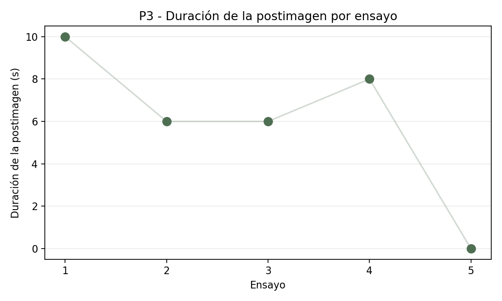

1. Fundamentos neurofisiológicos de las vías aferentes/eferentes
Se entiende que la vía aferente visual comienza en la retina, donde los bastones y los conos transforman la luz en una señal eléctrica mediante la fototransducción. Los pigmentos sensibles a la luz cambian su conformación cuando reciben los fotones y ese cambio pone en marcha la respuesta del fotorreceptor. La señal pasa luego a las células bipolares y a las células ganglionares, cuyos axones forman el nervio óptico. Después del quiasma y del tracto óptico, la información hace relevo en el cuerpo geniculado lateral del tálamo y llega a la corteza visual del lóbulo occipital por las radiaciones ópticas.
También se entiende que la exposición continua a la luz disminuye la sensibilidad de los fotorreceptores y que esa sensibilidad se recupera de forma gradual cuando la estimulación termina. Esa recuperación no es inmediata y puede prolongarse durante un tiempo incluso después de que la respuesta eléctrica del fotorreceptor haya vuelto a su nivel inicial.
Cuando la fuente luminosa desaparece y los ojos permanecen cerrados, puede persistir una imagen retenida. Si la imagen conserva la luminancia del estímulo se trata de una postimagen positiva, y si aparece invertida o con colores complementarios se trata de una postimagen negativa. En este último caso se explica por la desensibilización de los conos que fueron estimulados, de modo que los conos no adaptados responden con más fuerza y el percepto resultante tiende al color opuesto. Como en este registro no se informó un color complementario, el análisis se limita a la persistencia de la imagen y a la recuperación de la sensibilidad.
La vía eferente interviene al final del proceso, porque el participante informa verbalmente lo que percibe y detiene el cronómetro con el dedo. Esa respuesta motora desciende desde la corteza por la vía corticoespinal hasta el nervio periférico y la unión neuromuscular.
2. Diseño metodológico y muestra
Para el tercer módulo se ocupó una muestra de un solo individuo, en la que el estudiante realizó el rol de participante y de experimentador. Se utilizó la linterna del teléfono como fuente luminosa, manteniendo una distancia mínima de treinta centímetros y exposiciones de entre dos y cinco segundos. Después de cada exposición el participante cerraba los ojos y ponía en marcha un cronómetro manual, que detenía en el momento en que la imagen retenida desaparecía. Se realizaron cinco ensayos.
Las medidas de seguridad consistieron en no acercar la fuente a menos de treinta centímetros, no mantener la mirada fija más tiempo del necesario y suspender la sesión ante cualquier molestia o antecedente de fotosensibilidad. No se usaron pantallas ni programas, ya que el registro fue manual y luego se volcó a una tabla con la exposición, la duración de la postimagen y las observaciones.
| Protocolo | Participante | Experimentador | n | Diseño |
|---|---|---|---|---|
| P3 | Estudiante | Estudiante | 1 | Cinco ensayos, exposición de dos a cinco segundos y cronómetro manual |
La fuente luminosa fue la linterna del teléfono, sin pantallas ni programas. Como medidas de seguridad se mantuvo una distancia mínima de treinta centímetros, no se mantuvo la mirada fija más de lo necesario y la sesión se suspendía ante cualquier molestia o antecedente de fotosensibilidad.
3. Tablas de datos cuantitativos, representación gráfica y evidencia fotográfica original

| Ensayo | Exposición en segundos | Postimagen en segundos | Medio | Observación |
|---|---|---|---|---|
| 1 | 4 | 10 | FLASH | Sin observación |
| 2 | 2 | 6 | FLASH | Sin observación |
| 3 | 3 | 6 | FLASH | Sin observación |
| 4 | 5 | 8 | FLASH | Intensidad menor que en el ensayo de cuatro segundos |
| 5 | 2 | 0 | FLASH | No hubo persistencia de imagen |
| Cinco ensayos. Media de seis segundos, mediana de seis segundos y desviación estándar de tres segundos con siete décimas. | Mínimo cero segundos. Máximo diez segundos. | |||
4. Discusión de resultados fundada en los principios de procesamiento sensorial y plasticidad neuronal
Los cinco ensayos dieron duraciones de diez, seis, seis, ocho y cero segundos. La media fue de seis segundos, la mediana de seis segundos y la desviación estándar de tres segundos con siete décimas. El rango fue amplio, entre cero y diez segundos, lo que muestra una variabilidad considerable para un mismo estímulo.
La persistencia de la imagen se explica porque la señal retinal sigue activa durante un breve intervalo después de que cesa la luz y porque la sensibilidad de los fotorreceptores se recupera de manera gradual. Esa recuperación no se limita a que la respuesta eléctrica vuelva a su nivel inicial, sino que la sensibilidad puede permanecer reducida durante un tiempo adicional por el blanqueo del pigmento y por los mecanismos que regulan la ganancia de la cascada de fototransducción.
La relación entre el tiempo de exposición y la duración de la postimagen no fue uniforme. El primer ensayo, con cuatro segundos de exposición, produjo la postimagen más larga, de diez segundos. El cuarto ensayo, con cinco segundos de exposición, dio ocho segundos y además se describió como de menor intensidad que el primero. Con solo cinco observaciones no es posible establecer una tendencia. La fatiga atencional, el estado de adaptación previo de la retina, la distancia real al flash y la precisión del cronómetro manual pudieron influir más que la duración nominal de la exposición. Para repetir el ensayo conviene aleatorizar el orden, calibrar la intensidad luminosa y dejar un período de adaptación a la oscuridad entre ensayos.
El quinto ensayo, con dos segundos de exposición y cero segundos de postimagen, se conservó como dato válido. Que no se observara imagen no significa que el procedimiento fallara, sino que en esa condición no se manifestó una imagen retenida mensurable. Su inclusión evita elevar artificialmente la media y resulta coherente con la variabilidad esperable en un fenómeno perceptivo subjetivo. Como no se informó un color complementario, no corresponde usar la teoría oponente como explicación directa de estos datos. El análisis se apoya en la persistencia retinal y en la adaptación de los fotorreceptores.
Desde la neuroplasticidad aplicada, este protocolo muestra una plasticidad de corto plazo. El sistema visual modula su sensibilidad según la historia reciente de estimulación y la recupera de forma progresiva. Comprender estos mecanismos ayuda a pensar estrategias de rehabilitación y entrenamiento perceptivo, aunque el tamaño de la muestra y la falta de calibración instrumental limitan cualquier generalización.